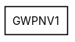
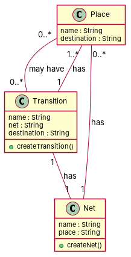

← all cases
D2/GWPNV1 — model qwen, condition B, run 1
1. Requirements (input)
R1: There is a place.
R2: PetriNet has a transition.
R3: There is a Net.
R4: in a Petri Net a Place is mapped to a single Network
R5: A place may have transitions as its destination.
R6: A transition has exactly one net and vice versa.
R7: A transition has at least one destination place.
R8: A Net has at least one place.
2. Result 1 → Result 2 (ambiguity removal)
Red, struck-through: removed by ambiguity removal; green: added.
| classes (4 → 4) |
|---|
| Net |
| PetriNet |
| Place |
| Transition |
| attributes (2 → 2) |
|---|
| Place.destination |
| Transition.destination place |
| relations (4 → 4) |
|---|
| has: Net -> Place |
| has: PetriNet -> Transition |
| has: Place -> Transition |
| has: Transition -> Net |
3. Ambiguity tags
| id | req | type | cue | status | readings / explanation |
|---|
| A1 | R4 | terminological | passive 'mapped' without agent | open | A Place is mapped to a single Network in a Petri Net.; A Network is mapped to a single Place in a Petri Net.
The term 'mapped' is ambiguous and could refer to either a Place to Network or Network to Place mapping. |
4. Diagrams generated from the shared model
usecase diagram
class diagram
5. Code skeleton (Python; Java in code/java/)
"""Code skeleton generated from the shared model of D2/GWPNV1.
Every class and method records the requirement(s) it traces to."""
from __future__ import annotations
import dataclasses as _dc
import enum as _enum
import typing as _t
@_dc.dataclass
class Place:
"""Source: R1, R4, R5, R8"""
name: _t.Optional[str] = None
destination: _t.Optional[str] = None
transitions: _t.List["Transition"] = _dc.field(default_factory=list)
@_dc.dataclass
class Transition:
"""Source: R2, R6, R7"""
name: _t.Optional[str] = None
net: _t.Optional[str] = None
destination: _t.Optional[str] = None
places: _t.List["Place"] = _dc.field(default_factory=list)
def createTransition(self) -> None:
"""Operation."""
raise NotImplementedError
@_dc.dataclass
class Net:
"""Source: R3, R4, R8"""
name: _t.Optional[str] = None
place: _t.Optional[str] = None
places: _t.List["Place"] = _dc.field(default_factory=list)
def createNet(self) -> None:
"""Operation."""
raise NotImplementedError
6. Validation, checks and traceability
| python_compiles | True |
|---|
| java_compiles | True |
|---|
| attribute_mismatches | 0 |
|---|
| method_mismatches | 0 |
|---|
| use_cases | 0 |
|---|
| use_cases_without_actor | 0 |
|---|
| use_cases_without_method | 0 |
|---|
| actors_without_use_case | 0 |
|---|
| relations_to_unknown_class | 0 |
|---|
| inconsistencies | 0 |
|---|
| inconsistency_rate | 0.0 |
|---|
| requirement_coverage | 1.0 |
|---|
| validator fixes | |
|---|
| assumptions for open ambiguities | [{"tag": "R4", "assumption": "A Place is mapped to a single Net in a Petri Net, and a Net is mapped to a single Place in a Petri Net."}] |
|---|
7. Scores against the reference
| element | P | R | F1 | TP/FP/FN |
|---|
| classes | 1.0 | 1.0 | 1.0 | 3/0/0 |
| attributes | 0.0 | 0.0 | 0.0 | 0/7/0 |
| relations | 1.0 | 1.0 | 1.0 | 3/0/0 |
| relations_strict | 1.0 | 1.0 | 1.0 | 3/0/0 |